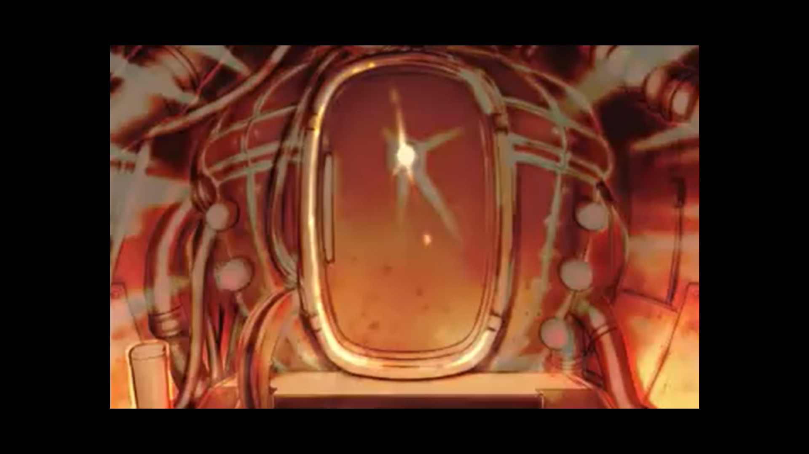

索克斯
要拯救大家，只能這麼做了……
孩子們
嗚、嗚哇——！！索克斯
我……我去找找有用的東西！馬爾托
索克斯，你要跑去哪裡！！波隆
很危險喔～！？索克斯
這裡是……？

索克斯
……
索克斯
果、果然這是……戰車的武器沒錯……對吧？
索克斯
這裡看起來像是可以讓人進去的空間……可是……不會吧……真的嗎……
索克斯
試、試試看好了……這樣大家，說不定就可以得救了……！





塔拉尼斯
『靈魂加農炮．腔室能源填充開始』塔拉尼斯
『請駕駛乘員維持耐衝擊姿勢』塔拉尼斯
『自動攻擊模式下靈魂加農炮發射系統開始執行』凱爾
發、發生什麼事了！？靈魂加農炮是什麼鬼東西！？
馬爾托
我不清楚，我真的不知道……漢娜
索克斯呢……？索克斯跑去哪裡了！？小梅
嗚哇～～嗯！！好可怕喔～～！！波隆
沒事的……一定，不會有事的！！布雷榭爾
那、那到底是……什麼東西……難道那也是武器嗎……多麼不吉利的東西啊……
布雷榭爾
後、後退！全戰車部隊，全速後退快速散開！！塔拉尼斯
『靈魂加農炮發射３秒前』塔拉尼斯
『３……２……１……發射』

布雷榭爾
惡、惡魔……！！！
旁白
雖然靈魂加農炮是一擊將敵人全數破壞的強力兵器但啟動時需要付出巨大的犧牲
旁白
平時為封印狀態，會根據塔拉尼斯自己的判斷必要使用時才會被解放馬爾托
到……到底發生什麼事了……？波隆
好強的光啊……凱爾
嘿！貝爾曼軍的戰車好像都不見了耶！漢娜
咦！？凱爾
哈、哈哈……！太強啦，這輛戰車……！這樣的話，真的能夠把貝爾曼的傢伙們打倒也說不定！
漢娜
吶……索克斯呢……？凱爾
啊啊，那傢伙好像在找著什麼東西的樣子，或許剛剛攻擊的也是那個傢伙。
馬爾托
有點擔心呢，我去找找。凱爾
嘖……只會給人添麻煩啊，真是的……
馬爾托
這個眼鏡……是索克斯的……？
馬爾托
索克斯……？
馬爾托
索克斯的眼鏡掉在這裡……但到處都找不到人……
凱爾
蛤……？
收音機
『恐怕……』
收音機
已經確認了靈魂加農炮的發射……看來有誰成為了加農炮的能量，對吧……？
收音機
這輛戰車的主炮，『靈魂加農炮』有著不管是什麼樣的敵人都能粉碎的力量……
收音機
但是要打出這麼強力的一擊，必需使用人的生物能量……一個人的生命是必要的……
收音機
靈魂加農炮被發射了，代表有誰成為了能量，消失了吧……
收音機
你們的悲傷我能夠理解，但我能做的也僅是靜靜地守護著大家而已……
收音機
繼承消失人們的遺志，一同實現你們的夢想吧……
收音機
我保證儘自己所能成為你們的力量……
小梅
吶……索克斯……你在哪裡……？
馬爾托
我……沒有保護好他……
旁白
孩子們，無法完全了解從收音機裡所傳達出的話語含義。
旁白
但，唯有一件事，是不得不明白的。
旁白
『有一位重要的人，已不復存在』
旁白
但是，唯獨這件事……

旁白
在那之後孩子們帶著消沉的意志，繼續向前邁進。
旁白
但是，貝爾曼帝國軍並不會在意那種事，
旁白
孩子們受到了發現塔拉尼斯部隊的攻擊……
收音機
來吧，大家一起戰鬥吧……！（孩子們已經被蒙上一層陰影……）
收音機
快點戰鬥啊！那並不是打不贏的對手呀！（孩子們仍然無動於衷）
收音機
這樣啊……你們已經失去繼續戰鬥下去的意志了呢……（塔拉尼斯持續受到攻擊）
收音機
這次就……沒辦法了……
收音機
誰都無法在一開始就戰勝，對於失去事物的悲傷及恐懼……
收音機
可是你，是知道的……
收音機
就算失敗了，至今為止獲得的東西並不會白費……
收音機
下一次，絕對會做得更好的……
收音機
為了讓你們，能戰勝各種困難與恐懼……
收音機
我會一直在這裡，守護著大家的……

收音機
在我下次醒來之前，要暫時地道別了呢……晚安……孩子們……
收音機
果然要使用那個力量，還太早了點……
收音機
我搞錯了，那些孩子們性命的用法……
收音機
比起眼前的勝利，我們的最終目的還在更前頭才對……
收音機
這次一定要把孩子們引導到正確的道路才行……旁白
本次的戰鬥迎來了最不幸的結局……旁白
但是，這個世界擁有神秘的力量可以將時間回溯倒流……
旁白
孩子們不會發現時間已經倒流的
旁白
孩子們的時間將重新開始！
（塔拉尼斯車內）
漢娜
怎麼了馬爾托……？你剛才在哭嗎？
馬爾托
嗯？沒有那種事啊。
漢娜
因為你的臉頰上有淚水的痕跡啊……
馬爾托
真的耶……為什麼啊？
凱爾
怎麼啦，打瞌睡時夢到什麼了嗎？
索克斯
大家都很累，打瞌睡也是沒有辦法的事。
波隆
一定是很悲傷的故事呢～
小梅
哥哥，很難過嗎？
馬爾托
沒事的，小梅，我很好。
馬爾托
（但是……怎麼說呢，這種奇妙的感覺……）
馬爾托
希望小梅沒有感到不安……
波隆
必須跟他說，隨時都能依賴身為大哥的我讓他安心才行！
小梅
小梅不會害怕呦！
馬爾托
嗯！繼續前進，得趕快救出大家！
（塔拉尼斯繼續前行）
收音機
『敵方逼近了！』
凱爾
你說什麼！？真的假的！
馬爾托
這次的對手跟以往的敵人相比可是不一樣的……大家要小心啊！

布雷榭爾
你們已經被我的部隊完全包圍了我不喜歡無意義的戰鬥，所以……快投降吧！
布雷榭爾
醜話先說在前頭，只要在戰場遭遇到了即便是小孩子，我也不會手下留情的！
漢娜
怎麼會……
馬爾托
擅自把村子裡的大家都帶走了，還想要做什麼……！
索克斯
要、要戰鬥嗎……？
凱爾
怎麼辦……？
馬爾托
我們要戰鬥！如果不去戰鬥的話，大家會沒辦法回來的！
凱爾
沒有錯！說什麼沒有勝算還是怎樣的，不做做看是不會知道的！
布雷榭爾
哼，果然。都是些小孩會做出的選擇……愚蠢吶……
布雷榭爾
不管你們的那一輛戰車有多麼巨大，依舊寡不敵眾！再重複一遍！快投降吧，少年們。
馬爾托
雖然在這裡被那群傢伙抓住的話，也許就能回到大家的身邊了……
馬爾托
也不曉得能不能救得了大家……！
馬爾托
大家……
小梅
小梅，好想見爺爺跟奶奶……
漢娜
戰鬥什麼的，好可怕！
凱爾
我……我才不怕呢！對付那些傢伙，輕輕鬆鬆啦！
索克斯
嗚、嗯……！
波隆
如果可以拯救村裡的大家……那麼我也要戰鬥！
馬爾托
很好……反擊！！
布雷榭爾
這可是戰爭……不是什麼孩子的扮家家酒！
馬爾托
那種事……我早就知道了！
布雷榭爾
可惡的小鬼竟說些任性話……既然如此，就做好覺悟吧！小鬼頭們……！
馬爾托
要看清楚敵人……要發現他們的弱點……
索克斯
在上面有個會移動的部分……看起來是不想收到我們攻擊的樣子……！
馬爾托
好……朝那個位置攻擊試試看！死馬當活馬醫！（激烈的戰鬥後）
布雷榭爾
這是什麼戰車啊……!真的是那些孩子讓它動起來的嗎……？
布雷榭爾
呼……我居然輸給了那樣一群小鬼頭嗎……（忽然間，爆炸聲響徹雲霄）
凱爾
太、太好啦！！我們贏啦！！
馬爾托
得救了嗎……我們……
波隆
嗯……嘿嘿嘿不知怎麼的，一安心下來之後肚子就餓了呢～……
凱爾
你啊，都只顧這種事……
漢娜
唉……那、那個貝爾曼戰車裡面的人……死掉了嗎……
馬爾托
這樣啊……我們……把人給殺掉了……
馬爾托
我們……殺了人了……旁白
為了救出被帶走的大家，而乘上戰車去戰鬥……
旁白
在此同時，自己也將打倒貝爾曼帝國軍的人並殺死他們，孩子們被迫意識到了這點……
收音機
這次，依靠大家的力量獲勝了呢……大家真的做得非常好……
收音機
各位在這之後，為了達成目的也必須不斷將敵人打倒……
收音機
如果不這麼做，你們以及被囚禁起來、對你們來說最重要的人都會死掉的……
漢娜
大家……都會死掉……？旁白
孩子們被收音機的話語一下子拉回現實，不斷的深思之後，孩子們覺悟了。
旁白
『這就是戰爭』……
收音機
這輛戰車備有不管是什麼樣的敵人都能粉碎的強大兵器——靈魂加農炮
收音機
但是要打出這麼強力的一擊，必需使用人的生物能量……一個人的生命是必要的……
索克斯
咦……！？
收音機
如果能不使用它就解決是最好的……
收音機
但是，遇到必須要拯救大家的危機時刻時……不要猶豫
收音機
一定也會有後悔的時候……但是，迷惘的話會連後悔都來不及，大家都會死的……
收音機
為了不讓這樣的結果成真，我保證會盡可能成為你們的助力……旁白
孩子們雖然並不能理解從收音機裡聽到的所有意涵，但只有這點是明白的……
旁白
『只要迷惘的話，大家就會死。』旁白
孩子們無法對那席捲而來，層層積累而且沉重的現實視而不見……
（貝爾曼帝國軍卡斯科侵略部隊 司令部）
哈庫斯
果然傳言中的『惡魔』正沉眠著……這樣的話，『失落之神』也一定還在這片大地上……哈哈哈
哈庫斯
最後還是立了一件大功呢，布雷榭爾上校……至今為止的戰功中，最有價值的一份工作了。
第１樂章 終